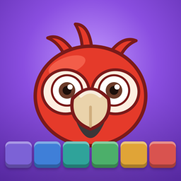

Kiko's Puzzle: Block Adventure
by Yavuz Studio
Support
Need help with Kiko's Puzzle, found a bug, or have an idea? We'd love to hear from you.
📧 Email: harunyavuz538@gmail.com
We usually reply within 2 business days.
Frequently asked questions
Is the game free?
Yes. Kiko's Puzzle is free to play and supported by ads.
I watched an ad but didn't get my reward.
Rewards are given only when the ad finishes. If an ad fails to load, please check your internet connection and try again a bit later. If the problem continues, email us with your device model.
Will I lose my progress if I delete the app?
Your progress is saved on your device. Deleting the app also deletes your progress.
How do lives and tools refill?
Lives refill over time (one every 30 minutes). Each tool refills one charge per hour, up to 3.
Privacy
Read our Privacy Policy.